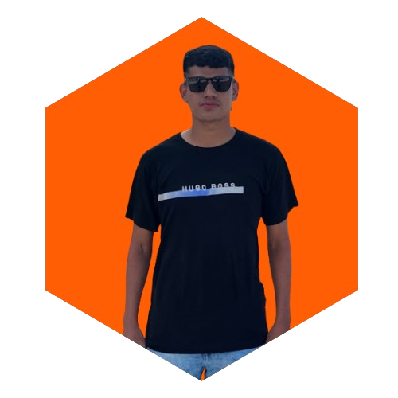

Sobre mim
Olá, meu nome é Elson Rodrigues e sou graduando em Análise e Desenvolvimento de Sistemas pela UNDB. Com 20 anos, sou um entusiasta na área de desenvolvimento web e estou me dedicando intensamente para me tornar um desenvolvedor profissional. Tenho um bom relacionamento interpessoal e sei trabalhar bem em equipe, além de possuir conhecimento em metodologias ágeis. Minha paixão pelo desenvolvimento web me motiva a buscar constantemente novas habilidades e conhecimentos para aprimorar minhas competências. Aqui você encontrará uma amostra do meu trabalho e das minhas experiências na área.
Acesse minhas redes:
